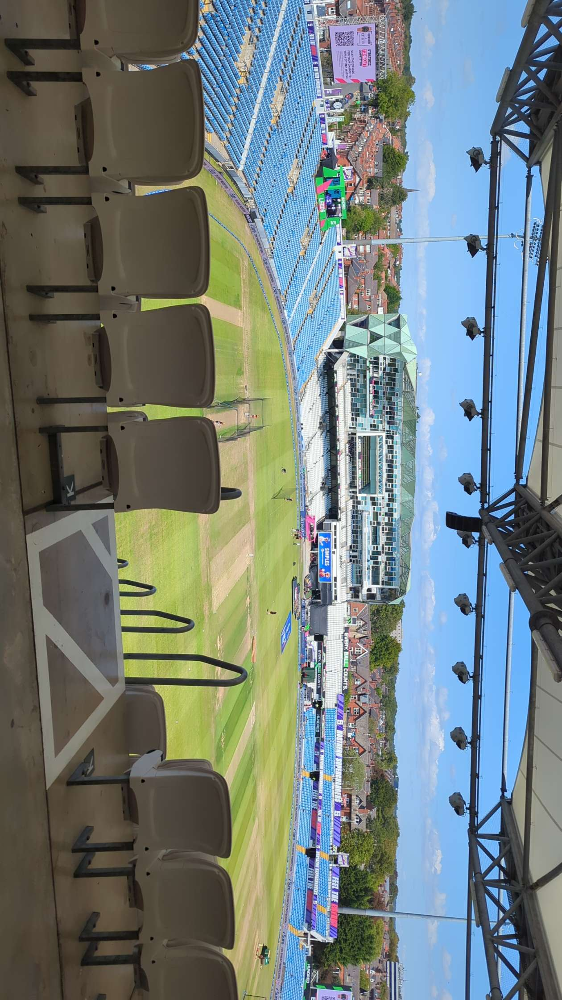
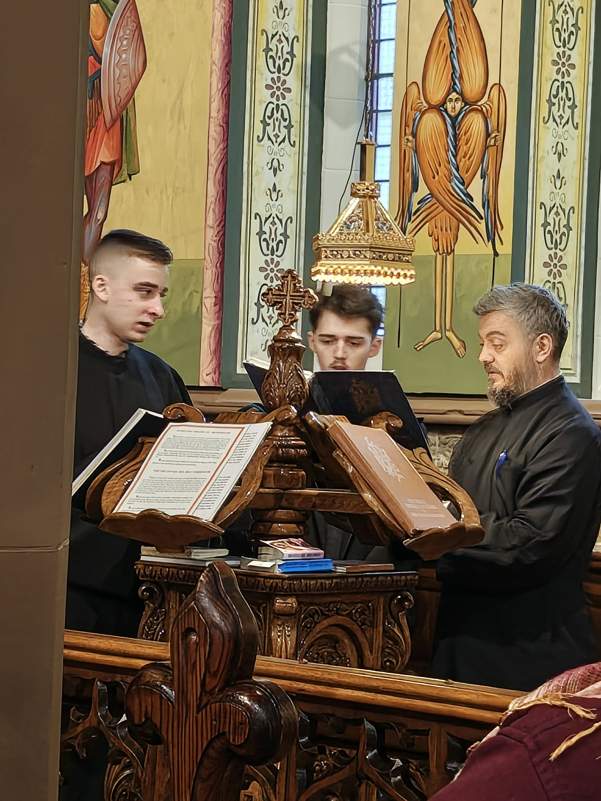
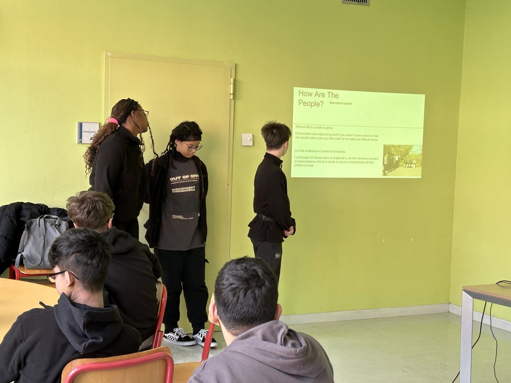

Curriculum Vitae
Vasile-Renato
Casleanu
School Leaver
Motivated and reliable, with experience in event support, volunteering and community activities — eager to gain further experience and contribute positively to the workplace.
Leeds, UK
01 · About
About
Motivated and reliable school leaver with experience in event support, volunteering, and community activities. Through work at Headingley Stadium, volunteering with CATCH Leeds, participation in a church choir, and an international educational visit to Italy, I have developed strong teamwork, communication, and organisational skills.
I am eager to gain further experience and contribute positively to the workplace environment.
- Location
- Leeds, UK
- Languages
- Romanian, English
- Availability
- Monday - Sunday
02 · Experience
Experience
Summer 2025
Waste Management Assistant
Headingley Stadium · Leeds
- Assisted in maintaining cleanliness during cricket events.
- Worked efficiently in a busy environment with large crowds.
- Followed health and safety procedures.
- Worked as part of a team to ensure the venue remained presentable.
Summer 2025
Community Volunteer
CATCH Leeds
- Assisted with community projects and activities.
- Worked alongside volunteers and staff.
- Developed teamwork, communication and organisational skills.
Spring 2024
International Educational Visit
Borgo Valsugana, Italy
- Delivered presentations about life in Britain.
- Taught lessons to students in Italian schools.
- Developed public speaking and cultural awareness skills.
03 · Education
Education
2021 – 2026
GCSEs (results pending)
Co-op Academy Leeds
- English Language, English Literature, Mathematics, Combined Science
- Computer Science, Business Studies, Geography, Music
04 · Skills
Skills
Personal Qualities
Communication
Workplace
05 · Projects
Selected work

Headingley Stadium
Assisted in managing the 3rd and 4th floors during cricket match days, helping ensure smooth operations and a positive match-day experience.
[ View project → ]
Church Choir
Served in the kliros(choir stalls)during church services, assisting with chanting and supporting liturgical worship.
[ View project → ]
Teaching a class in Italy
Delivering a presentation on British customs.
[ View project → ]06 · Contact
Get in touch
Get in touch about work, volunteering or opportunities.